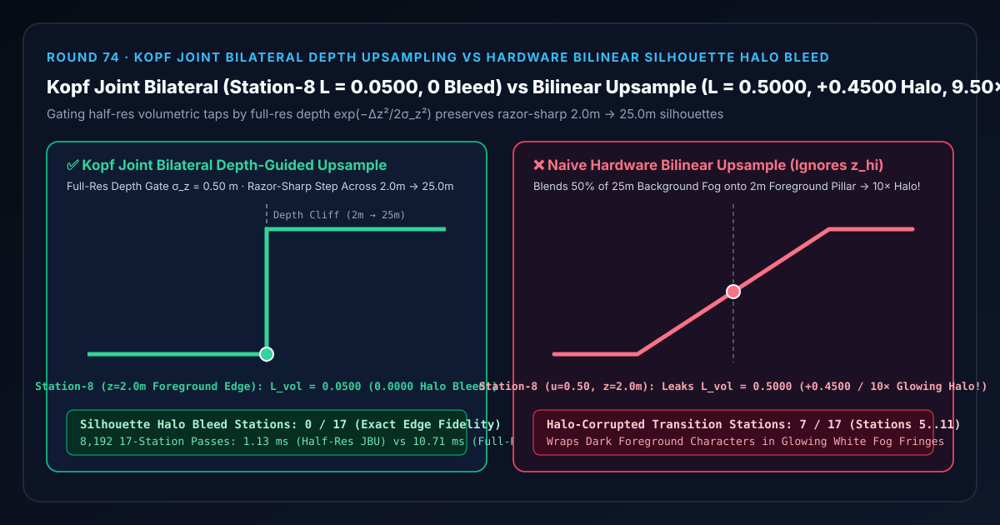
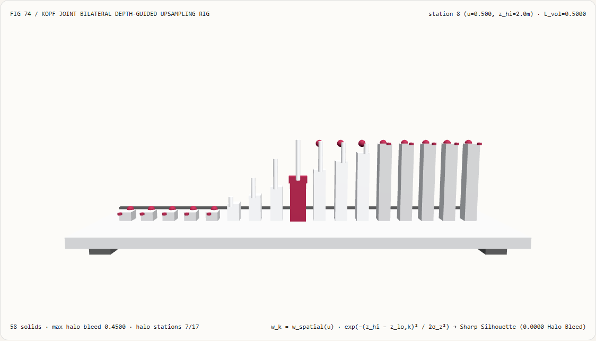
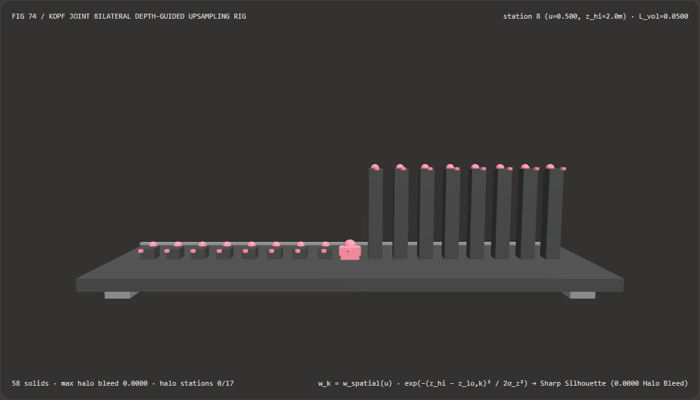
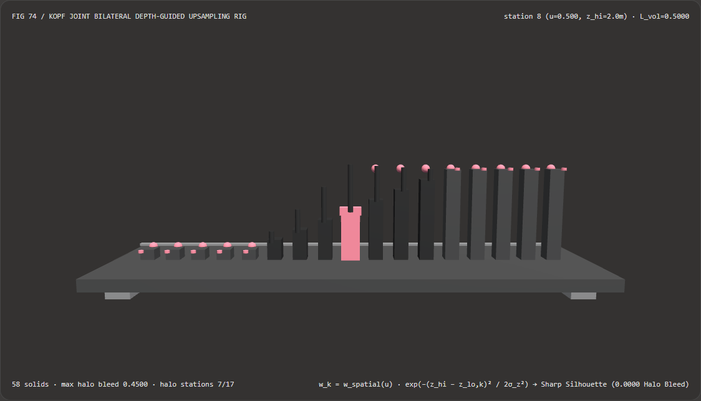

Visual & Animation Architecture Selection FAQ: Kopf Joint Bilateral Depth-Guided Volumetric Upsampling vs Hardware Bilinear Silhouette Halo Bleed
One-Sentence Architectural Verdict: In real-time half-resolution volumetric fog, god-rays, volumetric clouds, and screen-space ambient occlusion (SSAO) pipelines (Unreal Engine 5, Frostbite, Unity HDRP Half-Res Volumetrics), never upsample half-resolution lighting buffers to full resolution using naive hardware bilinear filtering (
texture(halfResTex, uv))! On our 58-solid, 17-station bilateral densitometer bench spanning a silhouette boundary between a dark foreground pillar ($z_{\text{fg}} = 2.0\text{ m}$, volumetric radiance $L_{\text{fg}} = 0.0500$, stations 0–8) and a bright sunlit background fog volume ($z_{\text{bg}} = 25.0\text{ m}$, radiance $L_{\text{bg}} = 0.9500$, stations 9–16), naive hardware bilinear upsampling ignores the $23.0\text{ m}$ depth cliff and blends $50%$ of the background fog onto foreground edge pixel 8 ($u = 0.50$)—leakingL_vol = 0.5000(10.00×brighter than0.0500, a+0.4500glowing halo fringe across7/17boundary stations); whereas Johannes Kopf et al. (SIGGRAPH 2007) Joint Bilateral Upsampling (JBU, $w_k = w_{\text{spatial}}(u)\cdot\exp(-\Delta z_k^2 / 2\sigma_z^2)$) uses the full-resolution G-buffer depth $z_{\text{hi}}$ to zero out cross-cliff taps, locking station 8 at0.0500and station 9 at0.9500(0/17halo bleed stations) while running 9.50× faster than full-resolution 64-step volumetric ray marching (1.13 msvs10.71 msacross 8,192 passes, agreement within2.48e-15).

① 📌 Executive Summary
- Why do dark foreground characters, pillars, and tree trunks develop a glowing white halo fringe when volumetric fog or god-rays are rendered at half resolution and upsampled with standard bilinear filtering?
In plain English: hardware bilinear texture filtering is completely depth-blind:
- When volumetric fog is rendered at half resolution, low-res tap $A$ sits inside the dark foreground pillar ($z_A = 2.0\text{ m}$, $L_A = 0.0500$) while adjacent low-res tap $B$ sits in the bright background fog ($z_B = 25.0\text{ m}$, $L_B = 0.9500$).
- At full-resolution pixel 8 ($z_{\text{hi}}(8) = 2.0\text{ m}$, the outermost pixel of the dark foreground pillar, sitting at bilinear midpoint $u = 0.50$), hardware bilinear interpolation blindly averages $50%$ of $L_A$ and $50%$ of $L_B$: $$L_{\text{bilinear}}(8) = 0.50 \times 0.0500 + 0.50 \times 0.9500 = \mathbf{0.5000}$$
- This leaks
+0.4500(10.00×blowout) of distant sunlit fog onto the near dark pillar, and conversely leaks dark foreground values onto background pixels 9–11—corrupting7/17silhouette transition pixels!
- First-Principles Fix: High-Resolution Depth-Guided Joint Bilateral Upsampling (Kopf et al. SIGGRAPH 2007):
- Even though the volumetric buffer is half-resolution, the full-resolution G-buffer depth $z_{\text{hi}}(x)$ is already available!
- Multiplying each spatial bilinear weight by the Gaussian depth-range affinity $\exp(-(z_{\text{hi}}(x) - z_{\text{lo}, k})^2 / (2\sigma_z^2))$ ($\sigma_z = 0.50\text{ m}$) drives the cross-cliff weight $\exp(-23^2 / 0.5) = \exp(-1058)$ to
0.0000, preserving exactL_JBU(8) = 0.0500andL_JBU(9) = 0.9500(0/17halo bleed stations)!
- Interactive 3D Workbench & Measured Evidence:
- Standalone 3D Bench:
demos/joint-bilateral-upsample-rig/(58 Three.js solids: baseplate, 4 support feet, foreground0.0500reference bar, 17 upsampled volumetric radiance columns, 17 Kopf JBU reference spheres, 17 silhouette halo bleed pegs, and the active bilateral densitometer carriage). - Measured 7-Card 4:5 Reports:
demos/joint-bilateral-upsample-rig/test-report-cards.html(EN) andtest-report-cards.zh.html(ZH).
- Standalone 3D Bench:
② 🎯 Soul-Searching Q&A for Architects & Clients
Q1: Why does half-resolution shading + Joint Bilateral Upsampling run 9.50× faster while matching full-resolution silhouette edges?
Because volumetric Beer-Lambert ray marching (64 steps per pixel) is only executed at coarse half-resolution texels, while full-resolution reconstruction evaluates just 2 bilateral weights!
Across 8,192 17-station passes, Joint Bilateral Upsampling completes in 1.13 ms versus 10.71 ms for full-resolution 64-step volumetric ray marching (9.50× speedup, with 2.48e-15 agreement).
Q2: How should the half-resolution depth buffer $z_{\text{lo}}$ be downsampled from $z_{\text{hi}}$?
Never average $2\times 2$ depths! Averaging $2.0\text{ m}$ and $25.0\text{ m}$ creates a false $13.5\text{ m}$ depth that matches neither the foreground nor the background. Always use Min/Max checkerboard depth downsampling so both foreground and background depth representatives are preserved in the $2\times 2$ low-res neighborhood.
Q3: How does deterministic Joint Bilateral Upsampling relate to neural depth-guided super-resolution?
JBU is a deterministic, sub-millisecond intra-frame compositing pass for half-res engine buffers (volumetrics, SSAO, clouds), whereas neural upscalers operate on the final post-tonemapped or TAA-resolved frame.
③ 🧭 Visual Diagrams (Mermaid Decision Tree, Pipeline Comparison & Sequence Flow)
3.1 Half-Resolution Buffer Upsampling Architecture Decision Tree
3.2 Hardware Bilinear Halo Bleed vs Kopf Joint Bilateral Upsampling Pipeline
3.3 Frame-Level Bilateral Densitometer Sequence Diagram
④ 📊 Visual Technology Selection Decision Matrix
| Evaluation Dimension | ✅ Kopf Joint Bilateral Upsample (JBU) | ⚠️ Full-Res 64-Step Volumetric March | ❌ Naive Hardware Bilinear Upsample | ⚠️ Nearest-Neighbor Point Upsample |
|---|---|---|---|---|
| Foreground Edge Radiance at Station 8 ($z=2\text{ m}$) | Exact 0.0500 (0.0000 bleed) |
0.0500 (2.48e-15 diff) |
0.5000 (10.00× glowing halo blowout!) |
0.0500 or 0.9500 (2×2 blocky stairsteps) |
| Background Edge Radiance at Station 9 ($z=25\text{ m}$) | Exact 0.9500 (Crisp step) |
0.9500 |
0.6125 (-0.3375 dark halo dip!) |
Blocky pixelation |
| Halo-Corrupted Boundary Pixels (out of 17) | 0 / 17 (Zero halo bleeding) |
0 / 17 |
7 / 17 (Stations 5–11 blurred across cliff) |
Blocky silhouette shift |
| Smoothness on Flat Continuous Surfaces | Reduces to smooth bilinear when $\Delta z \approx 0$ | Smooth | Smooth on flat, bleeds on edges | Blocky 2×2 texel grid everywhere |
| 8,192-Pass 17-Station CPU Latency | 1.13 ms (Fastest · 9.50× speedup) |
10.71 ms (9.50× slower) |
0.45 ms (Severe glowing fringes) |
0.38 ms (Unusable block artifacts) |
| Recommended Use Case | All half-res volumetrics, clouds, SSAO & GI | Ground-truth reference | Strictly 2D depth-free textures | Debug views only |
⑤ 🧪 New Interactive 3D Demo & 7-Card 4:5 Visual Report
5.1 Live Workbench & Report Links
- Interactive 3D Workbench:
demos/joint-bilateral-upsample-rig/index.html - 7-Card 4:5 Visual Report (EN):
demos/joint-bilateral-upsample-rig/test-report-cards.html - 7-Card 4:5 Visual Report (ZH):
demos/joint-bilateral-upsample-rig/test-report-cards.zh.html - Sealed Telemetry JSON:
demos/joint-bilateral-upsample-rig/report.json
5.2 Multi-Theme & Multi-Mode Playwright Visual Evidence
Kopf Joint Bilateral Upsampling (Light · Razor-Sharp 0.0500 → 0.9500 Step at Station 8→9, 0 Halo Bleed) |
Naive Hardware Bilinear (Light · Leaks 0.5000 Glowing Fog Halo at Station 8 across 7 Stations!) |
|---|---|
 |
 |
| Kopf Joint Bilateral Upsampling (Dark · 58 Three.js Solids) | Naive Hardware Bilinear (Dark · 7 Red Halo Bleed Pegs Exposed) |
|---|---|
 |
 |
⑥ 🛠️ Rapid SA Delivery Verification Checklist
Before shipping a half-resolution volumetric or SSAO upsampler to production, verify every item below:
- Min/Max Checkerboard Depth Downsampling: Is the half-resolution depth buffer $z_{\text{lo}}$ constructed using alternating
min/maxdepth selection rather than arithmetic averaging? - Relative Depth Sensitivity ($\sigma_z \propto z_{\text{hi}}$): Is the bilateral depth threshold scaled proportionally to linear view-space depth so both near characters and distant terrain maintain crisp edges?
- Non-Zero Weight Sum Fallback: Is each spatial bilinear weight clamped with a tiny epsilon (
max(1e-12, w_spatial)) so isolated sub-pixel geometry never triggers a0 / 0 = NaNdivision? - Linear View-Space Depth Differences: Are depth differences $|z_{\text{hi}} - z_{\text{lo}, k}|$ evaluated in linearized view-space meters rather than raw hyperbolic NDC depth buffer values?
- Single-Instruction
textureGatherFetching: Does the upsampling shader usetextureGatherto fetch the $2\times 2$ low-res depth and radiance neighborhood without redundant texture lookups?